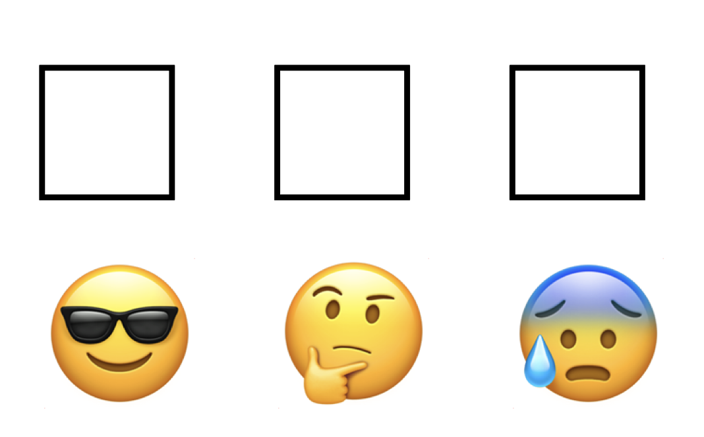
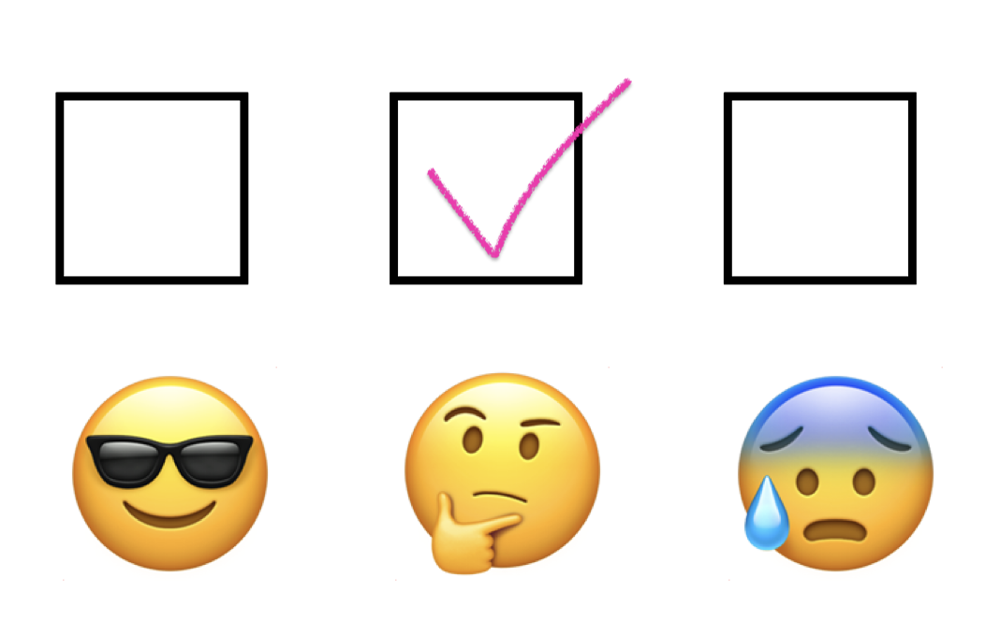

| Results of OLS regression models predicting life expectancy at birth in a sample of countries |
||
|---|---|---|
| Model 1 | Model 2 | |
| Predictor | ||
| 0.403 *** | 0.301 *** | |
| 38.541 | 0.149 *** | |
| Constant | 0.749 | 37.974 |
| Model R² | 0.403 *** | 0.814 |
| N = 107 * p < 0.05 ** p < 0.01 *** p < 0.001 |
||
Homework 7
Instructions
- Download the printable version of this assignment here. Print it out and record your answers directly in the space provided.
- Write your name and student number on the top of the assignment.
- For problems requiring additional written work, use the allotted work space and/or margins of the page.
- Once you’re done with a problem, reflect on how you well-equipped you felt answering that particular problem using the confidence level assessment.




- Turn in your assignment in class on the due date.
Questions
Question 1
A researcher collected the following data on years of education (X) and number of children (Y) for a sample of married adults:
| X | Y |
|---|---|
| 12 | 2 |
| 14 | 1 |
| 17 | 0 |
| 10 | 3 |
| 8 | 5 |
| 9 | 3 |
| 12 | 4 |
| 14 | 2 |
| 18 | 0 |
| 16 | 2 |
- Draw a scatter plot of the data.
- Calculate and interpret the correlation between education and number of children.
- Is the association between education and number of children statistically significant? Explain the basis of your answer and the implications for the association in the population.
- Calculate and interpret the meaning of the regression slope.
- Calculate and interpret the meaning of the Y-intercept for the regression line.
- Predict the number of children for an adult with 11 years of education.
- Calculate and interpret the coefficient of determination.
Question 2
The same researcher collected at random one child from each of the eight families in which there was at least one child. She calculated the following statistics to study the effects of number of siblings (X) on happiness of the child (Y), measured on an interval scale in which low scores indicate a low level of happiness and high scores indicate a high level of happiness.
| Happiness points (Y) | Number of siblings (X) | |
|---|---|---|
| \(\bar{y} = 5.625\) | \(\bar{x} = 1.750\) | \(r = 0.588\) |
| \(s_y = 2.134\) | \(s_x = 1.282\) | \(n = 8\) |
- Is the association between number of siblings and happiness statistically significant? Explain the basis of your answer and the implications for the association in the population.
- Calculate and interpret the meaning of the regression slope.
- Calculate and interpret the meaning of the Y-intercept for the regression line.
- Predict the level of happiness for an only child and for a kid with two siblings.
- Calculate and interpret the coefficient of determination.
Question 3
A personnel specialist with a large accounting firm is interested in determining the effect of seniority (the number of years with the company) on hourly wages for administrative staff. She selects a random sample of 10 secretaries and collects the following data on their years with the company (X) and hourly wages (Y):
| Hourly Wage (Y) | Years with company (X) | |
|---|---|---|
| \(\bar{y} = \$13.90\) | \(\bar{x} = 2.700\) | \(r = 0.631\) |
| \(s_y = \$1.37\) | \(s_x = 1.889\) | \(n = 10\) |
- Is the association statistically significant? Explain your answer.
- Calculate and interpret the meaning of the regression slope.
- Calculate and interpret the meaning of the Y-intercept for the regression line.
- Predict the hourly wage of a randomly selected worker who has been with the company for 4 years.
- Calculate and interpret the coefficient of determination.
- Based on these results, what is the typical starting wage per hour, and what is the typical increase in wage for each additional year on the job? (not a trick question!)
Use the following information to answer both questions 5 and 6
Even in the modern era, countries differ dramatically in terms of the health of their populations. For example, average life expectancy is in the 80’s in some countries but remains in the low 40’s in other countries. Some researchers claim that the most effective way to improve the health of the worst-off populations is to provide more education for people in these countries. To assess this argument, use the following analysis of data from a random sample of countries
Definition of Variables
- Life expectancy at birth: Average age to which people born right now will live if exposed to current death rates in the country.
- % Literate: Percent of adults in the population that can read and write.
- % Urban: Percent of the country’s population residing in cities.
Question 5
Interpretation of Model 1
- Write out the regression equation implied in the results for Model 1.
- Predict the life expectancy for a country in which 75% of the population can read and write.
- Interpret the meaning of the constant in Model 1.
- Interpret the slope coefficient for the effect of % Literate in Model 1.
- Is the association between literacy and life expectancy statistically significant? Explain how you reached your conclusion.
- Interpret the coefficient of determination in Model 1.
- Do these results support the idea that population health (as measured by life expectancy) is affected by education levels (as measured by % literate)? Explain your answer.
Question 6
A critic of the education argument suggests that any association between literacy and life expectancy is a spurious byproduct of urbanization; in countries in which the population is concentrated in cities people have access to both schooling and health care, creating an association between literacy between literacy and life expectancy that is not causal. To test this argument, interpret Model 2 of the table above.
- Write out the regression equation implied in the results for Model 2.
- Predict the life expectancy for a country in which 75% of the population can read and write and 50% of the population lives in cities.
- Interpret the meaning of the constant in Model 2.
- Interpret the slope coefficient for the effect of % Literate in Model 2.
- Interpret the slope coefficient for the effect of % Urban in Model 2.
- Interpret the coefficient of multiple determination in Model 2
- Do these results support the argument that the association between life expectancy and % literate is spurious? Explain your answer.